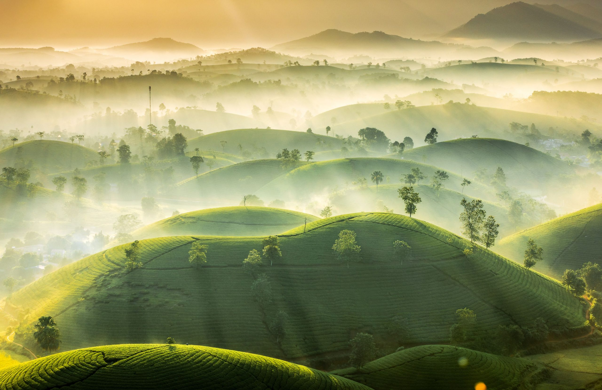
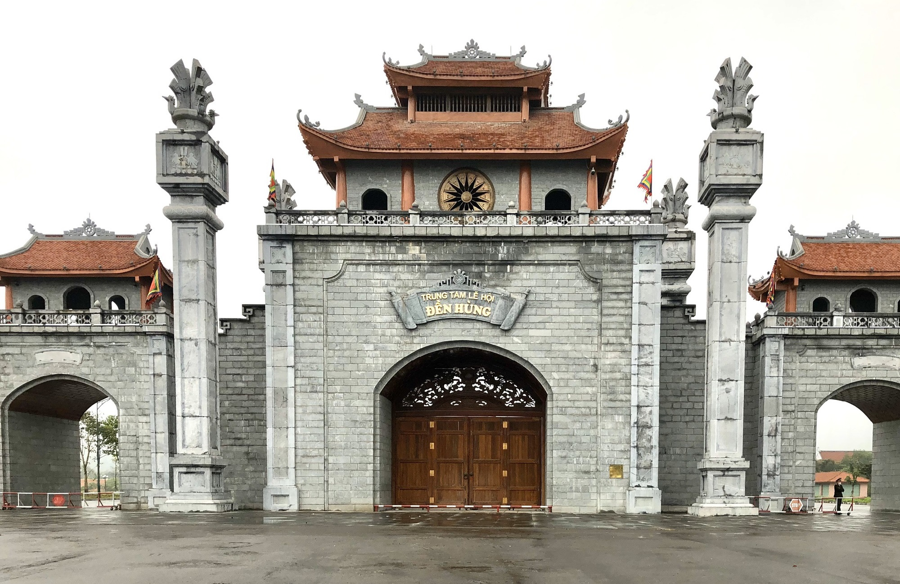

Welcome you guys to my hometown
Like you know I live in Hanoi but I'm not from here. I grew up in a house with two parents and an older brother in the midlands called Phu Tho. The place I live in has a lot of high mountains with thousands of tea fields. Recently my hometown just had a picture won the second prize of Weather Photographer of the Year award and the interesting thing is that place near my home is just 10 kilometers away.
Not far from my house is Den Hung or Hung King temple, the area is a complex consisting of several temples dedicated to the cult of Hung Vuong or Hung King: the first descendants of the mythological founders of the Vietnamese, Lac Long Quan and Au Co. Styled sequentially as Hung Vuong I to Hung Vuong XVIII, the monarchs were the first dynastic rulers of Van Lang, the primordial kingdom of the Vietnamese. Popular belief designates the Hùng temple as also the site of Van Lang's capital, Phong Chau. The kingdom is associated with the Dong Son culture and the famous bronze drums. For the successive Vietnamese dynasties and states, the Hung Temples are revered with annual processional festivities known as The Hung Kings' Temple Festival held every 10th day of 3rd lunar month.
My hometown is the foundation of the long history of Vietnamese culture. We have a lot of traditional cuisine, featured clothes. And people from here are so nice, they are very humorous, friendly, always ready to help you. We grow up from mountains, we live in wars, we through the floods even the poor but we still stand. That made me proud most about my hometown.
 